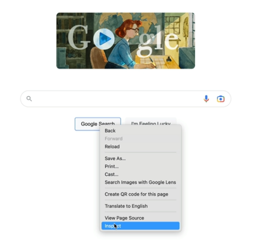

Thursday, March 28 2024
How Do Websites Work?
HTML, CSS, & JS
DNS Server; can look up the IP address of any website you want to access. And when you find that address, you can directly hit up the server computer for the website that you want to view & they will send you all the files & data for your browser to be able to render it on screen.
Now, the data that you receive from that server usually consists of 3 types of files; HTML, CSS, & JavaScript. They are so integral to how websites work.
Code files; HTML, CSS & JS
HTML; responsible for the content in your website, like text content, images, buttons, links.
CSS; responsible for styling your website, like color. Determines how your website will look, background color of the page, will the buttons have rounded corners?. It targets all the content in your website that you created using HTML, eg text, buttons & applies styling to those elements.
JavaScript; code that allows your website to actually do things, or have functionality. It turns a static website which has pretty images or text into something that a user can actually interact with, eg send an email in Gmail, or post your breakfast on Instagram.
Combined together is how we create modern websites.
Google in 1998; you should really try this in Google, coz when you hit search, it'll turn Google into what it looked like in 1998.

Chrome Developer Tools - right click & click on inspect:
Chrome has one of the best tool suites for web developers like us.
Effectively what we are changing is our local version.
Now, Chrome has one of the best tool suites for web developers like us.
In the coming lessons we are going to be working with HTML, CSS & JavaScript, so that you can create & host your own websites, live on the Internet & through learning how to code & how to build websites, you are going to be able to make websites that say anything you want it to, look the way that you want it to, & have the functionality that you need.